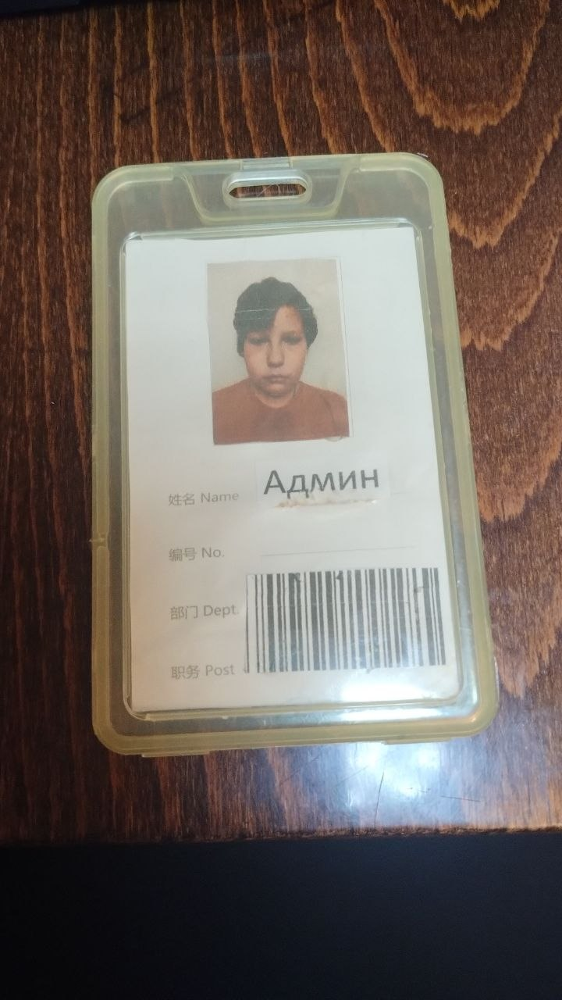

ЗОВУТ АРТЕМ😀 ------
ЛЕТ - 12-13 ------------
ЗАНИМИЮСЬ ПРОГРАМИРОВАНИЯМ-
CSS, HTML 💚----------
ЛЮБИМАЯ МУЗЫКА =
MONTAGEM-GUERREIRO-------------
ЖИВУ В УКРАИНЕ🇺🇦
--------------------------
--------------------------
--------------------------
ДАННЫЙ САЙТ НАПИСАН ЧЕЛОВЕКОМ АРТЕМ
----------------------------
ТОЕСТЬ МНОЙ🍁
-------------------------------
ЛЮБИМАЯ ВРЕМЯ ПОГОДЫ = ЛЕТО------
ДОЩЬ------------------
ПРО МЕНЯ -🍀
NVIDIA GTX 1060 3 GB -
INTEL I5 3570K--------------
ASUSTeK P8Z68 DELUXE---
IR-SSDPR-S25A-120--------
ST10000DM010-2DM162